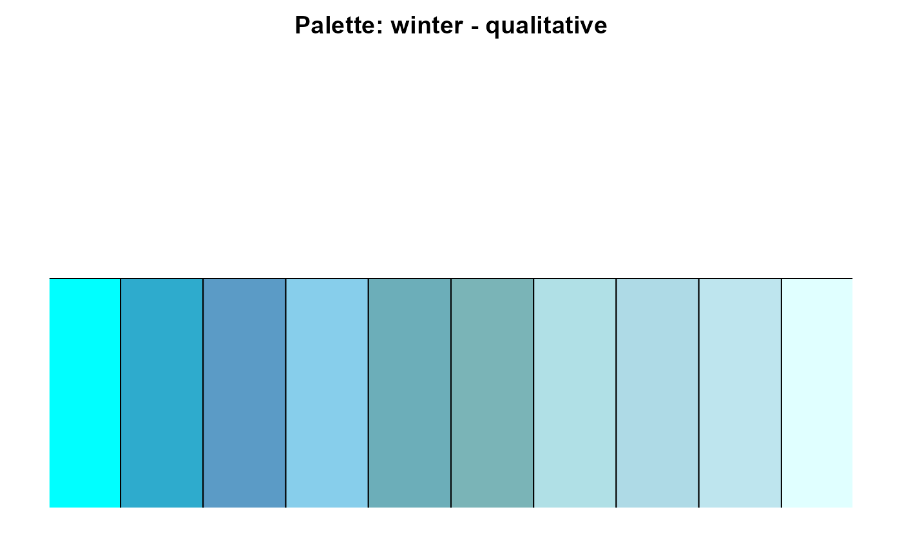
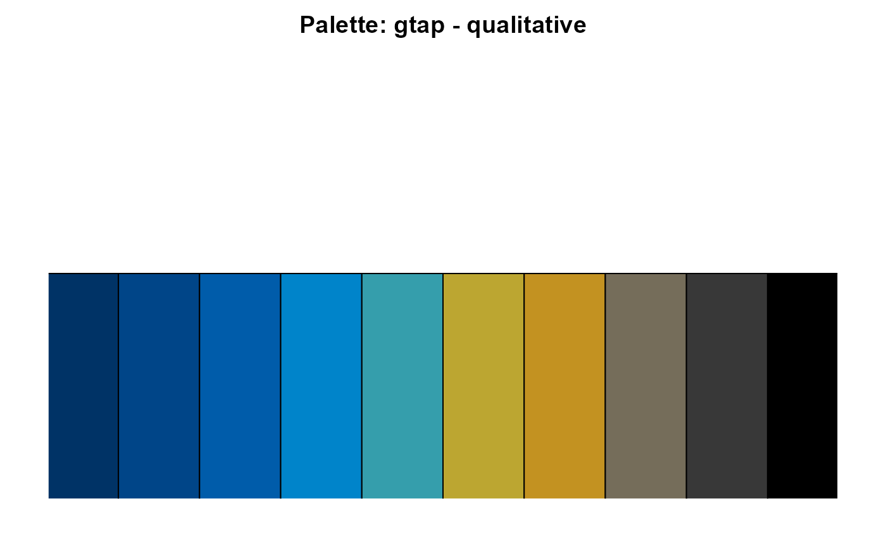
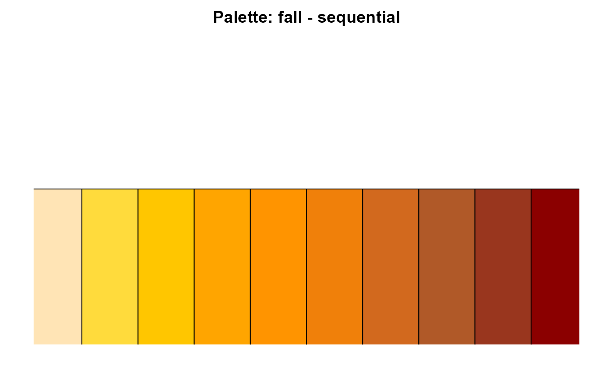
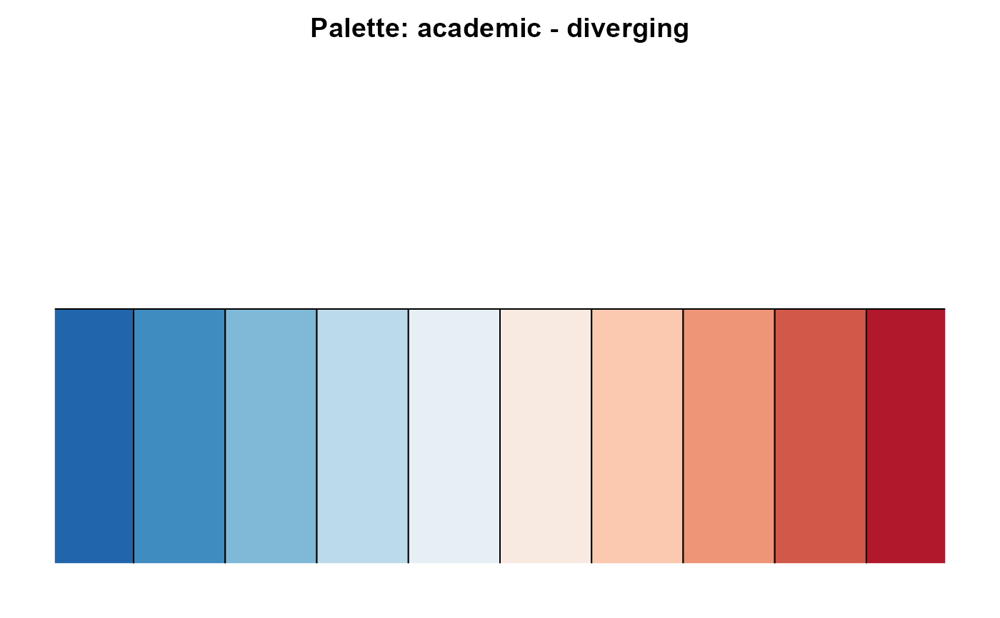

Prints and visualizes predefined color palettes used in GTAPViz. Use `color_tone = "all"` to return a list of callable palette functions.
Examples
# Get all palettes as callable functions
all_palettes <- get_color_palette("all")
all_palettes$winter()
#>
#> Palette: winter - qualitative
#> Colors: #00FFFF, #2EABCD, #5B9BC6, #87CEEB, #6CAEB9, #7AB4B7, #B0E0E6, #AEDAE6, #BEE5EE, #E0FFFF

all_palettes$gtap()
#>
#> Palette: gtap - qualitative
#> Colors: #003366, #004588, #005CAA, #0084CA, #359EAC, #BCA631, #C39221, #756D5A, #383838, #000000

# Visualize specific palettes
get_color_palette("fall", "sequential")
#>
#> Palette: fall - sequential
#> Colors: #FFE4B5, #FFDB3C, #FFC600, #FFA500, #FF9400, #F0800A, #D2691E, #B05928, #99361E, #8B0000

get_color_palette("academic", "diverging")
#>
#> Palette: academic - diverging
#> Colors: #2166AC, #3F8DC0, #80B9D8, #BBDAEA, #E6EFF3, #F9EAE1, #FAC9B0, #ED9576, #D25849, #B2182B
